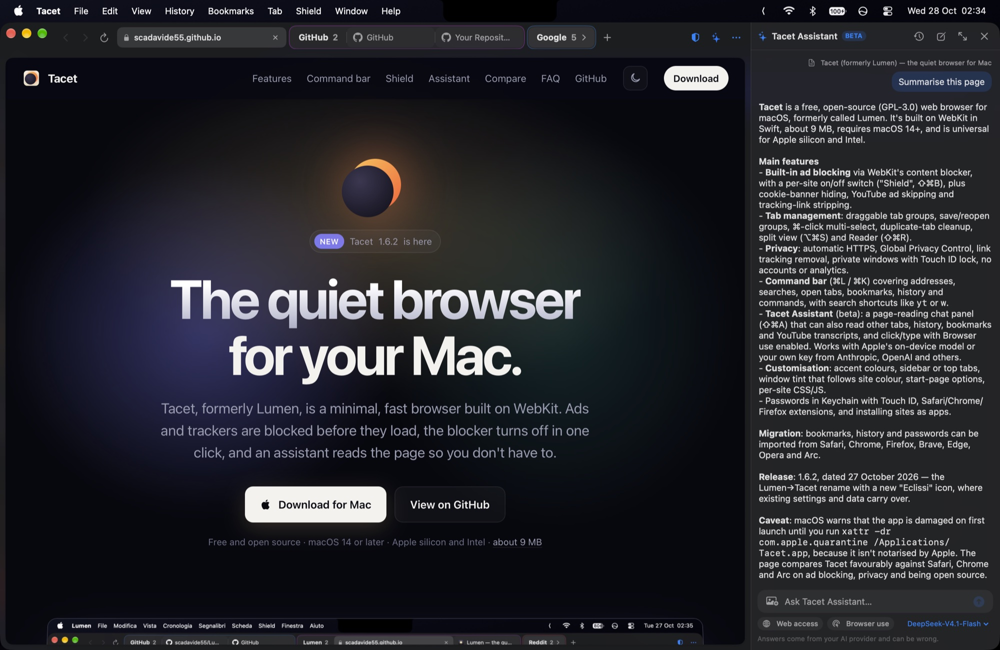
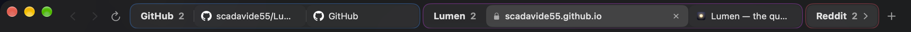

Free · macOS 14 or later · Apple silicon and Intel · Beta

Why Lumen
Everything you need. Nothing that gets in the way.
The speed and battery life of WebKit, the engine behind Safari, with the features Safari is missing.
Ads blocked, natively
Ads and trackers are stopped before they load, using WebKit's own content blocker. No extension, no slowdown.
Off in one click
If a site misbehaves, turn the blocker off for that site only. Or everywhere, with ⇧⌘B.
One bar for everything
Addresses, searches, open tabs, bookmarks, history and every command live in a single command bar. Press ⌘L.
Light on memory
Tabs you haven't touched in a while hibernate, then wake up exactly where you left them, history included.
Split view and reader
Put two pages side by side, or turn a cluttered article into a clean, readable page.
Private by default
Tracking removed from links, automatic HTTPS, Global Privacy Control and private windows that forget everything.
Passwords with Touch ID
Lumen saves your passwords in the Mac's Keychain, fills them after Touch ID and suggests strong new ones.
Tab groups
Drag a tab onto another to make a group, or let Lumen tidy tabs from the same site into one.
Sites as apps
Install any site as an app with its own window and Dock icon, kept apart from your browsing.
Lumen Shield
Ad blocking you can actually switch off.
Most blockers are all or nothing. Shield gives you a clear switch for every site, and sensible defaults everywhere else.
Works offline. A built-in list covers the biggest ad and tracking networks from the first launch.
Community lists. Turn on EasyList and EasyPrivacy for tens of thousands more rules, refreshed weekly.
No cookie walls. Consent banners are hidden and the page scrolls again.
Fewer YouTube ads. Video ads are stripped or skipped automatically.
Third-party cookies blocked. Sites can't follow you around the web.
Lumen Shieldnews.example.com
Protection on this site
Block ads and trackers
Hide cookie banners
Skip YouTube ads
Block third-party cookies
Remove tracking from links
275 rules active
Clean links
Links without the luggage.
Shared links are stuffed with tags that tell advertisers where you came from. Lumen strips them before the page even loads, so you land on the same page, minus the tracking.
Removes utm_, fbclid, gclid, msclkid and dozens more
Knows the site-specific ones on YouTube, Spotify, Amazon and X
Pick an accent colour, put the sidebar on either side or switch to tabs along the top, float the page with rounded corners, and choose your start page. Try a colour:
Window tint that follows each site's colour
Your own CSS for any site: hide distractions, change fonts
Search shortcuts: type yt lofi to search YouTube
Aurora
Dusk
Ocean
Forest
Ember
Graphite

Tab groups, each in its own colour.
Keyboard first
Fast hands, fast browser.
Everything has a shortcut, and the command bar finds the rest.
⌘ L
Command bar
⌘ T
New tab
⇧ ⌘ T
Reopen closed tab
⌘ S
Show or hide the sidebar
⇧ ⌘ R
Reader
⇧ ⌘ \
Split view
⇧ ⌘ B
Ad blocker on or off
⇧ ⌘ N
Private window
Try Lumen today.
Version 1.5.3 Beta · free · macOS 14 or later · Apple silicon and Intel
1Download and openOpen Lumen-1.5.3.dmg, about 6 MB.
2Drag it to ApplicationsDrop Lumen onto the Applications shortcut.
3Open it the first timeIf macOS says Lumen is damaged, run xattr -dr com.apple.quarantine /Applications/Lumen.app once in Terminal. The beta isn't notarized by Apple yet.
Questions
Good to know.
Is Lumen free?
Yes. Lumen is free to download and use.
Does Lumen collect any data?
No. There are no analytics and no accounts. Lumen only talks to the sites you visit. If you turn them on, it also downloads filter lists from easylist.to and fetches search suggestions from your search engine. Suggestions are off by default.
Why does macOS warn me when I open it?
The beta isn't notarized by Apple yet, so macOS may say Lumen “is damaged and can’t be opened”. The download is fine. Open Terminal and run xattr -dr com.apple.quarantine /Applications/Lumen.app once, then open Lumen as usual. Lumen’s own updates keep working after that.
Which engine does Lumen use?
WebKit, the same engine as Safari. Sites look and behave the way they do in Safari, and you get its speed and battery life.
Can I bring my bookmarks and passwords?
Yes. Lumen imports bookmarks, history and sign-ins straight from Safari, Chrome, Firefox, Opera, Brave, Edge and Arc. Passwords come across from a CSV exported by the Passwords app or your old browser, and are kept in your Mac's Keychain behind Touch ID.
Does it block every YouTube ad?
Most of them, most of the time. YouTube changes its ads often, so some may still get through.